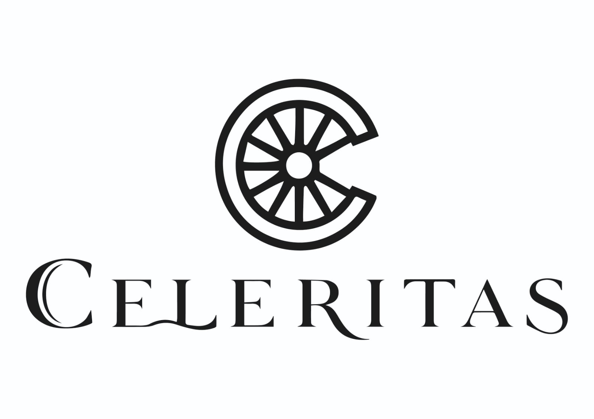

Monocasco de carbono
Ligero, rígido y construido alrededor del conductor.

01 · Filosofía
Diseñado para quien todavía siente la carretera
Cada Celeritas nace del equilibrio entre fuerza, precisión y belleza. Ingeniería avanzada con una conexión profundamente humana.
02 · Por qué Celeritas
Una experiencia que empieza antes de arrancar
Diseñamos cada encuentro con el coche como una experiencia privada: tecnología comprensible, atención humana y una decisión sin presión.
Desde la configuración hasta la entrega, una sola persona te acompaña en cada decisión.
03 · Ingeniería
Toca los puntos para descubrirlo
Celeritas GT · Anatomía en movimiento
Máxima rigidez, menor peso y protección integral del habitáculo.
620 CV y 760 Nm con respuesta inmediata desde 1.800 rpm.
Ocho relaciones y cambios en menos de 100 milisegundos.
Discos de 410 mm y pinzas de seis pistones.
Potencia inteligente
Entrega inmediata, respuesta progresiva y una banda sonora afinada para convertir cada aceleración en una experiencia física.
04 · Confianza
Lo importante también está bajo la superficie
Cada sistema se revisa y documenta para que conozcas el vehículo antes de decidir.
Información clara, sin letra pequeña y con acompañamiento experto durante todo el proceso.
Configuración, preparación y puesta en marcha adaptadas a tu forma de conducir.
05 · Gama
Tres formas de llegar antes
Gran turismo de altas prestaciones. Potencia refinada para viajes que no quieres terminar.
06 · Historias
La experiencia, contada desde el asiento del conductor
“No me enseñaron un catálogo. Me ayudaron a entender qué coche encajaba de verdad conmigo.”
“La prueba fue tranquila, técnica y muy personal. La sensación fue de control absoluto.”
“Desde la primera conversación hasta la entrega, todo tuvo el nivel que esperaba del coche.”
07 · Contacto
Showroom privado · Madrid
Cuéntanos qué estás buscando
El equipo Celeritas se pondrá en contacto contigo.
08 · Preguntas frecuentes
Completa el formulario o pulsa “Reservar visita”. Prepararemos una sesión privada centrada en el modelo que te interesa.
Sí. Podemos diseñar una experiencia comparativa para que valores respuesta, confort y tecnología en el mismo encuentro.
Te acompañamos en la elección de acabado, color, materiales y equipamiento hasta definir una configuración coherente contigo.
Aplicamos una inspección completa de mecánica, electrónica, carrocería e historial y compartimos el resultado de forma clara.
Sí. Así podemos dedicarte el espacio, el tiempo y el vehículo adecuados sin interrupciones.
09 · Experiencia
Tu próximo viaje comienza aquí